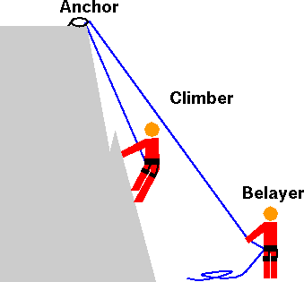
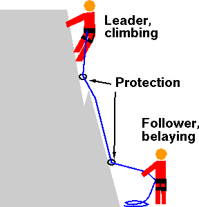
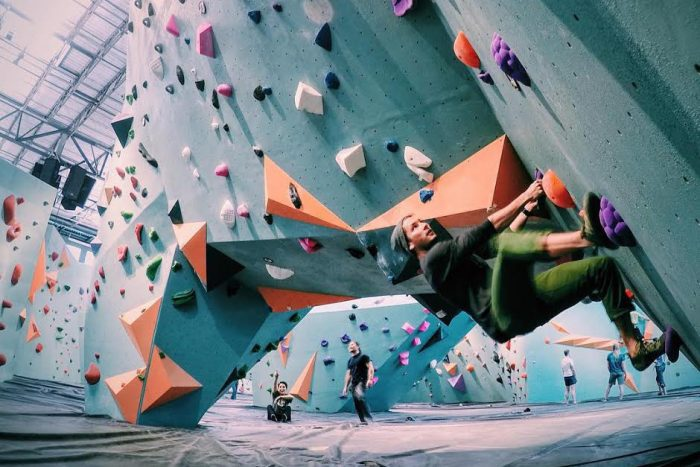

Rock climbing is an activity in which participants climb up, down or across natural rock formations or artificial rock walls. The goal is to reach the summit of a formation or the endpoint of a pre-defined route without falling. Rock climbing is a physically and mentally demanding sport, one that often tests a climber’s strength, endurance, agility and balance along with mental control. It can be a dangerous sport and knowledge of proper climbing techniques and usage of specialized climbing equipment is crucial for the safe completion of routes. Because of the wide range and variety of rock formations around the world, rock climbing has been separated into several different styles and sub-disciplines.
Intro to Rock Climbing for Beginners - How to, Terminology & Gear
Styles of Indoor Climbing: Top Rope, Lead, and Bouldering (Indoors and Outdoors)

Top rope as the name implies, is the style of climbing climbing where the climber is attached to a rope that is already set-up at the top of a climbing wall. This style involves a climber and a belayer.

Lead climbing is the style of climbing where the climber must clip the rope while climbing up, as the rope is on the ground and not already setup at the top of a climbing wall. This style involves a climber and a belayer.

Bouldering is the style of climbing where the climber does not use a rope and usually climbs to lower than a standard top rope or lead climb. This typically does not require more than one person, but others may be used as spotters to ensure a climber does not crash into hazardous objects.
4 Reason's to Try Rock Climbing!
Reason #1: It's a fun way to workout!
Ever get ready to go to the gym and dread going? Well with rock climbing you never will! The sport is enjoyable and gives you a full body workout that you would normally dread going to the gym for.
Reason #2: It's affordable.
As far as equipment goes, you don't really need much! Most people can get away with just a pair of climbing shoes and a climbing harness. Especially if you only go bouldering, you'll only need the shoes!
Reason #3: It's a great way to meet people.
Rock climbing is a very social sport. You aren't climbing at all times, theres lots of down time that includes rest, problem solving, or just general hanging out with the people surrounding you.
Reason #4: It's a physical and mental challenge.
Climbing is both a physical and a mental challenge. Think of it as a giant puzzle on the wall, and your body and how it moves is the solution. You've got to envision how you want to solve the problem before you climb.